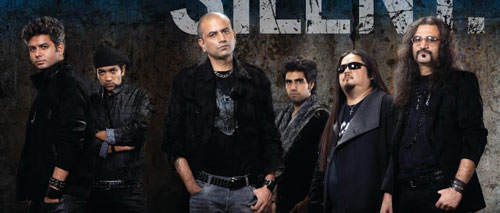
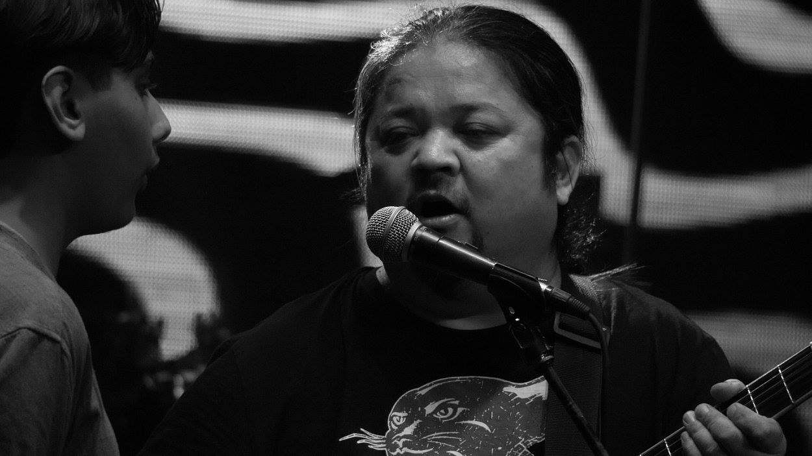

home
Blogs
About

Latest News
Parikrama lead guitarist Sonam Sherpa passes away at 48

Sonam Sherpa, founding member and lead guitarist of popular Indian band Parikrama, passes away in Kurseong; he suffered a cardiac arrest; he was 48 years old
band Crew
Nitin Malik – Lead vocalist
Sonam Sherpa – Lead guitarist (died 2020)
Saurabh Choudhary – Guitarist
Subir Malik – Organist, synthesizer
Gaurav Balani – Bass guitarist
Srijan Mahajan – Drummer
Mukul Jain - Lead vocalist (Temporary Concerts)